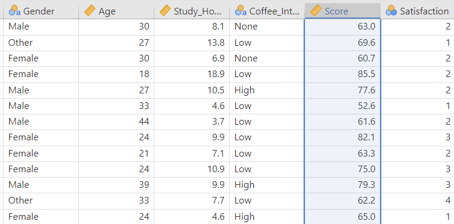
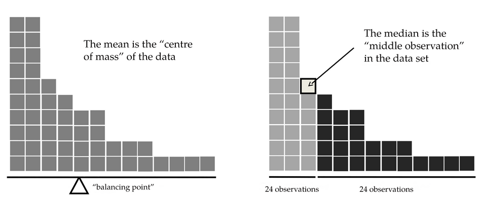
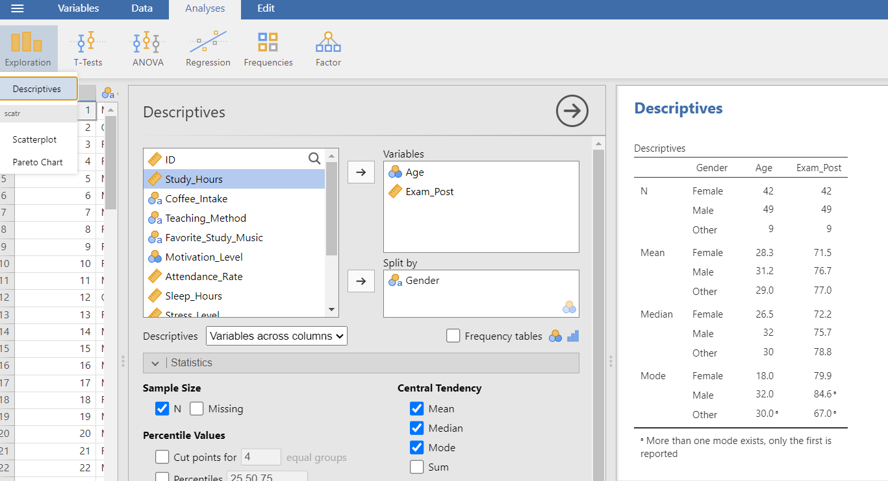
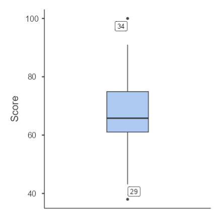
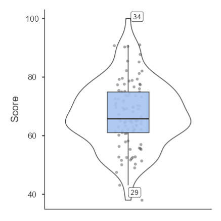
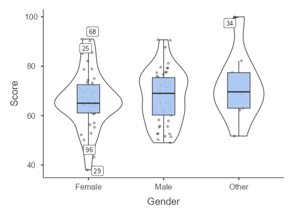
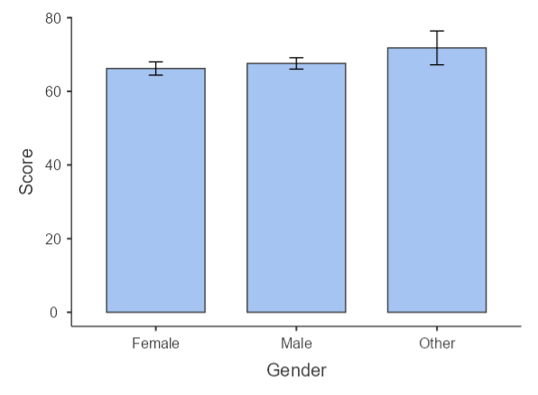
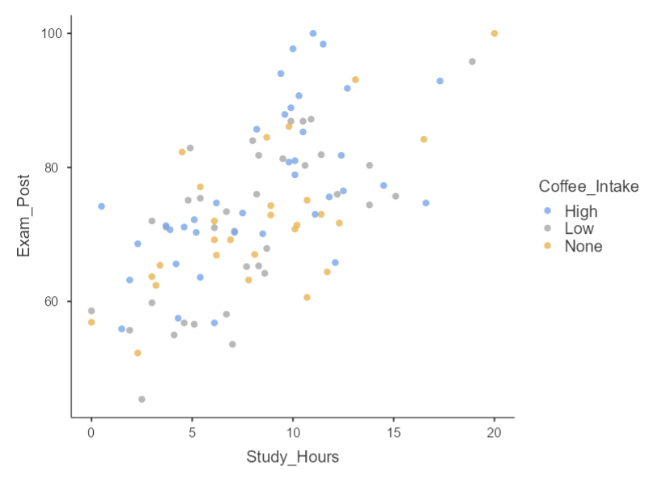

Describing and Visualizing Data
ReTune Fall School
17th of October, 2025
Descriptive Statistics
What does descriptive statistics mean and why is it important or useful?
Just looking at the raw data does not tell us much:

In most cases, it is helpful to get a measure of the central tendency, such as the average or middle of your data (either per group or overall). There are different measures for this central tendency: The mean, the median, and the mode.
Mean, Median, Mode
Mean: Add up all values and divide by number of values:
\[ (10+2+3+4+5)/5 = 4.8 \]
Median: The middle value of all sorted values, e.g 4:
\[ 2,3,4,5,10 \]
Mode: The most common value in the dataset, e.g. 2 in this example:
\[ 2,5,3,4,2,10 \]

Descriptive Statistics in Jamovi
Exercise: Try to figure out the mean, median, and mode of Age and Exam_Post.
Exercise 2: Get the mean age for each gender separately.

Variability
In addition to a value for “the middle of the data”, another important measure would be the “spread” or variability.
There are different measures for variability:
Range: Biggest value minus smallest value:
\[ -100, 2,3,4,5,6,7,8,9,10 => 110 \]
- not very robust!
Interquartile range (IQR): Difference between 25th and 75th percentile. Percentiles are the smallest number such that e.g. 25% of the data are less than that number. The median is the 50th percentile!
25th and 75th percentile can be easily calculated in Jamovi: Exploration -> Descriptives -> Statistics -> click “Percentiles”.
The IQR is the range covered by the “middle half” of the data, often used together with the median.
Variability 2
Mean absolute value: the “typical deviation” from the mean (or median):
Calculate the mean of the data:
\[ (10+2+3+4+5)/5 = 4.8 \]
Calculate each absolute deviation from each data point to this mean:
\[ 10 - 4.8 = 5.2;\] \[ 2 - 4.8 = |-2.8| = 2.8;\] \[ 3 - 4.8 = |-1.8| = 1.8;\] \[ 4 - 4.8 = |-0.8| = 0.8;\] \[ 5 - 4.8 = 0.2 \]
Calculate the mean of these deviation:
\[ (5.2 + 2.8 + 1.8 + 0.8 +0.2)/5 = 2.16 \]
Variability 3
It is often better (for mathematical reasons) to use the squared deviation instead of the absolute deviation from the mean.
This is called the variance:
Calculate the mean of the data:
\[ (10+2+3+4+5)/5 = 4.8 \]
Calculate each squared deviation from each data point to this mean:
\[ (10 - 4.8)^2 = 27.04;\] \[ (2 - 4.8)^2 = 7.84;\] \[ (3 - 4.8)^2 = 3.24;\] \[ (4 - 4.8)^2 = 0.64;\] \[ (5 - 4.8)^2 = 0.04 \]
Calculate the mean of these deviation, but use N-1 as the denominator:
\[ (27.04 + 7.84 + 3.24 + 0.64 +0.02)/4 = 9.695 \]
Or, in mathematical formulation:
\[ VAR(X) = \frac{1}{N-1}\sum_{i=1}^{N}(X_i-\bar{X})^2 \]
Variability 4
The problem with the variance is: It is completely uninterpretable as it is in the original unit squared.
Solution: Take the square root of the variance to bring it back to the original units!
This is called the standard deviation or root mean squared deviation (RMSD):
\[ SD(X) = \sqrt{\frac{1}{N-1}\sum_{i=1}^{N}(X_i-\bar{X})^2} \]
Rule of thumb: 68% of the data fall within 1 SD of the mean, 95% within 2 SD, 99,7% within 3 SD.
The SD is often used, especially in combination with the mean.

Standard Scores
Often, it is helpful to standardize scores to make them comparable e.g. across samples and test/measurement methods or even different variables. It transforms the data to state where an observation falls relative to its own population.
\[ score_{standardized} = \frac{score - mean}{SD}\]
Data Visualization
Showing the data visually is crucial.
It helps you understand your data and the reader of you research papers etc. to understand what you’re trying to tell them.
Unfortunately, Jamovi only has limited plotting or editing options, but for most (basic) plots, it does produce nice outputs.
Principles of Plotting
Anatomy of a plot: We have an x-axis (horizontal) and a y-axis (vertical).
It’s always a good idea to show the data.
Avoid clutter.
Don’t distort the data.
Account for perceptual limitations (e.g. color blindness, pie charts…)
Histograms
Histograms help you to get an impression of how your data of a variable is distributed. They are used for continuous data (interval or ratio scale).
- All values are divided into bins (choice of bins happens automatically in stats software),
- The number of observations that fall in each bin are counted (frequency). This is the height of each vertical bar.
In Jamovi: Exploration -> Descriptives -> select “histogram” check box.
Boxplots
Also suited for continuous data, they depict the median, IQR, and range of the data in a compact way (and several variables can be easily plotted next to each other and thus compared).
Thick line in the middle of the box is the median, the upper and lower sides of the box are the IQR and the end of the vertical line is the range - but max 1.5 IQR. Every data point outside of this range is shown as dot (here labelled) and may be considered an outlier.
In Jamovi: Exploration -> Descriptives -> select “Box plot” check box.
Violin Plots
A violin plot is similar to a boxplot but also shows the density (as a mirrored vertical curve). You may also add the raw data as well as a boxplot points to the plot, which increases transparency.
Multiple (Box) Plots
As mentioned, it can make sense to visualize several variables - or the same variable for different groups - next to each other. This is called a grouped or dodged plot.
You can easily achieve this in Jamovi, if you use a grouping variable such as gender in the “split by” box.

Bar Graphs
A bar graph looks on first sight similar to a histogram, but it does not show the distribution but rather one value (usually counts) for different groups.
You can also generate bar charts for continuous data that are not counts - but this is not advised. In this case, it will display the mean and the error bars will be the standard error (another measure of variability).

Scatterplots
If you have two continuous variables, you may want to make a scatter plot. This can be achieved via the correlation analysis (more to follow) or using the Scatr module.
End of Part 3
You should have a idea of how to get descriptive statistics and basic plots in Jamovi.
Next: Probability & Sampling, Hypothesis Testing